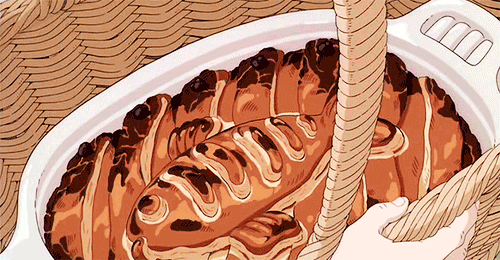

Kiki's Herring and Pumpkin Pot Pie

Description
Ingredients and Supplies
- an elecrtic stove that works, or a wood burning stove
Steps
Crust
- mix egg and flour
- flatten with rolling pin
- press into casserole dish
- make fish top
Filling
- cook ...annd ... in pan on medium heat
- add ... and ... Lower to a simmer, cover and cook...min
Assemble and Bake
- Preheat oven
- Carefully pour filling into crust.
- Add fish top
- Bake for so long that you miss your party